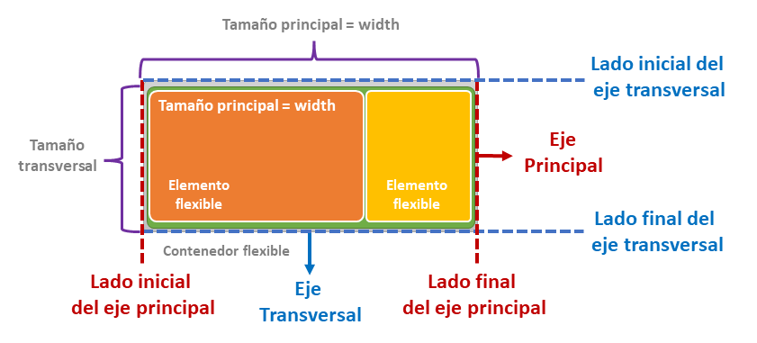
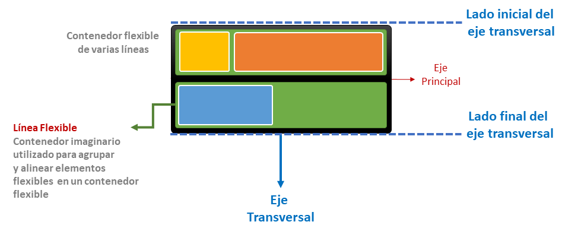

CONTENEDOR FLEXIBLE Y ELEMENTOS FLEXIBLES
La propiedad display con valor flex o inline-flex nos permite establecer un contenedor flexible. Los hijos del contenedor flexible se llaman elementos flexibles.
HTML
<div class="contenedor">
<div>E1</div>
<div>E2</div>
<div>E3</div>
</div>
CSS
.contenedor{
display: flex;
}

TERMINOS IMPORTANTES
Eje principal (Anticucho de elementos flexibles)
Es un eje a lo largo del cual se disponen los elementos flexibles. No es necesariamente horizontal; depende de la propiedad flex-direction
Lado inicial del eje principal | Lado final del eje principal
Los elementos flexibles se colocan dentro del contenedor comenzando desde el Lado inicial del eje principal yendo al lado final del eje principal
Lineas flexibles
Las líneas flexibles son construcciones imaginarias que alojan a los elementos flexibles. Pueden existir varias o una linea flexible dentro de un contenedor flexible
Eje transversal (Anticucho de lineas flexibles)
Es un eje a lo largo del cual se disponen las lineas flexibles. Es un eje perpendicular al eje principal.
Lado inicial del eje transversal | Lado final del eje transversal
Las líneas flexibles se colocan en el contenedor comenzando en el lado inicial del eje transversal yendo hacia el lado final del eje transversal.
Tamaño principal
El tamaño principal de un contenedor o un elemento flexible es su ancho (width) cuando el eje principal es horizontal y es su alto (height) cuando el eje principal es vertical.
Tamaño transversal
El tamaño transversal de un contenedor o un elemento flexible es su alto (height) cuando el eje transversal es vertical y es su ancho (width) cuando el eje transversal es horizontal.